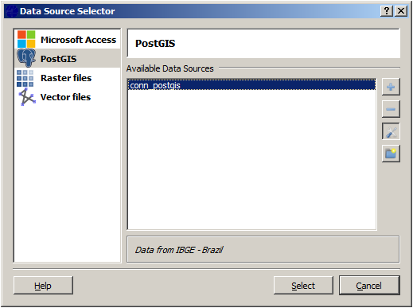
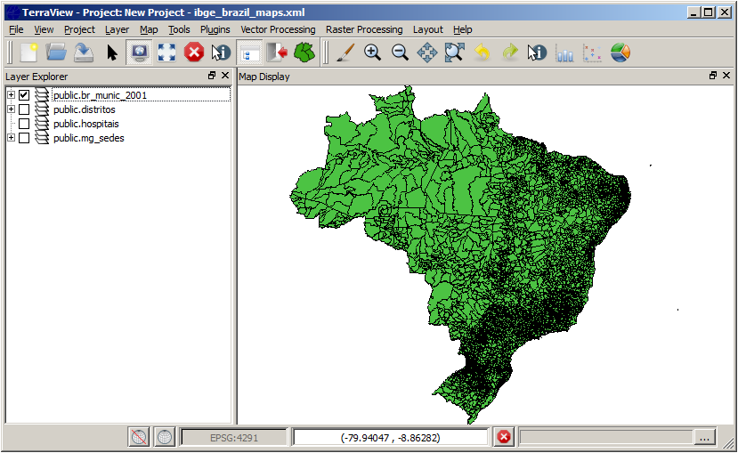

Data Source Selector
The Data Source Selector is used firstly to specify data sources from where to search for data and secondly to select one or more datasets from the available data sources. It is possible to add (+), remove (-) and edit (icon) data sources of different types:
Each type of Data Source has an appropriate set of parameters
to be defined in an appropriate interface. If at
least one data source is defined (PostGIS at this example), select it
to see
all the datasets available. The dataset names will be
showed and one or more datasets can be selected to be manipulated by
the main
window. It is important to note that the datasets still in the original
source.
Also you can combine datasets from different sources, for example you
can
select a shape file from a directory and a PostGIS spatial
data and draw
them without any import/export action over the original data.
Click on Select => Dataset Selection
Click on (+) to define a new connection with the data source type chosen (PostGIS, Access, Raster and Vector).
Click in (-) to delete a previous defined connection to a data source. All dataset of the data source deleted will not be accessible by the Layer Explorer.
Click on (edit) to edit a existent connection.
Click on (folder) to create a new empty data source and register to the system.
Defining Data Sources
Selecting Datasets from Data Source
